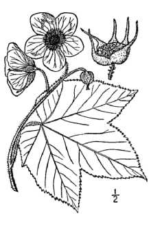

Week 3 - Mini Plant Database
Achillea millefolium var. occidentalis
Britton, N.L., and A. Brown, 1913, An illustrated flora of
the northern United States, Canada and the British Possessions. 3 vols..
Provided by Kentucky Native Plant Society, New York
Rubus parviflorus
Britton, N.L., and A. Brown, 1913, An illustrated flora of
the northern United States, Canada and the British Possessions. 3 vols..
Provided by Kentucky Native Plant Society, New York